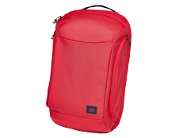

旅行摄影达人
美好的事情都将加速从生命中驶过，越美好就越快，46天的海上时间在登船那天，我就已经预感到结束的到来，除了美好的回忆像照片一样，什么都留不下，什么都要告别。
说唱歌手
在最辽阔的时刻我想缩小，在最兴奋的时候我想离开，但我真真地站在邮轮的甲板上，眼前是无比美丽的夕阳，我只期待着下一个岛出现在明天早上。
美女摄影师
从拿起相机背起行囊出发的那天起，我就知道未来的方向注定是在路上，从城市到原野，从陆地到海洋，走远一点，再远一点，做一名听风者，于浩瀚中感受自然的能量。
大溪地，帕皮提港
当地人手持香蕉树叶，头戴羽毛和贝壳编制的帽子，用他们自己的方式迎接我们的到来，他们的背后，是洁净的空气，蓝天，珊瑚礁和洋溢在脸上的真诚与幸福。
1/10
汤加
每当大西洋号离港，都会播送帕瓦罗蒂的悠扬乐曲，its time to say goodbye。离别汤加的海港的时候，船行上的歌声和船下码头的舞蹈交相呼应。
2/10
维拉港，海德薇岛
这个隐藏在大海中的碧蓝小岛有着全程最壮观的珊瑚礁上的鱼群，鱼群围绕着我旋转，就像是一场舞蹈。临走的时候，我对岛上的人说，请保护这片美好的天堂，我们已经被逐出了伊甸园。
3/10
波拉波拉岛
鲨鱼的印象完全来自于电影，最初的恐惧就是血腥，船长告诉我，这里从没有鲨鱼袭击人类的案例，我第一个跳进了海中，鲨鱼只是围绕着我旋转。
4/10
拉包尔
这是世界上珊瑚生长最健康的国度，完整的海洋天堂，未受人类污染的侵害，海底珊瑚在干净温暖的海水和阳光里完全按照自然生态成长，巨大的盘状珊瑚直径达到数米，在珊瑚上生长这众多的鱼类和微生物，在水中令人难忘的是微小难见的水母向我的皮肤发起攻击，你可以感到针扎一般的疼，但是什么都看不到。
5/10
日本，福冈
福冈是一个完全现代化的高度发达的海港，这里一切都是在严格的管理下按部就班运行着，但是在我们的船边，不仅仅飞翔着大量的觅食海鸟，还有野生小鹰，他们在船边和海鸥争夺食物，在太平洋的寒风中保持这优雅的飞行姿态，但是在抢夺食物的时候立刻露出矫健的野性和飞行技能。在城市环境中有几十只野生鹰隼生存，可见日本的环保意识。
6/10
瓦努阿图
一个来自当地人的拥抱。和众多太平洋岛屿一样，瓦努阿图人身材硕大，拥抱坚实有力，这既是岛国的热情，也是当地土著的礼仪。特别是当两个当地土著拥抱的时候，一个中国省份省会的名字便浮现在脑海。
7/10
韩国，釜山
在林川文化村的阳台上一只雕塑猫，在这样一个本来是一无是处的穷山恶水中，韩国人能用情趣和艺术塑造出一个虽然粗陋但是颇有卖点的文化村来，仅仅靠油漆和小商品就能玩起来。
8/10
大溪地，莫里亚岛
这是距离主岛最近的天堂岛，每天有数班轮渡往返于主岛和距离大约半小时的莫里亚岛。岛中心的山峰高耸，是一片巨大的克斯特地貌，但是覆盖了森林，远远看上去就像是阿凡达的拍摄地。乘船离开莫里亚岛的时候，正好是夕阳西下的时间，太平洋的万顷碧波被染成金黄色，就像是巴赫的大提琴。
9/10
韩国，济州岛
节理地址公园内海滩上的一段朽木。已经无从知晓它的年代和树种，时间的长河已经将它磨砺成为一件光滑的艺术品，下面那些浑圆的黑色岩石，坚实，圆满我不会知道他们的年代和地质属性，但是我知道，在地质年代上，他们属于不同的等级，岩石被磨砺成为浑圆已经超过3万年，木头不会超过300年，一个人被时间磨砺的历程几乎不会超过百年，而随后我们几乎什么都留不下，如同未曾来到过这个世界。
10/10
歌诗达邮轮
海风吹多了，容易发疯，但海会觉得你疯吗？船像一条火腿一样结实，破浪如压马路，瓷实稳当。刚离岸几小时，就开始想陆地上我的爱人和所有亲朋，情更浓，然后忘事儿。即便你能说尽天下词那又怎样？还不如掀了这桌麻将一起听听海浪。
丹特迪斯科厅
第一次在海上演出，邮轮里的迪斯科，那晚上各种胡言乱语，没有逻辑的人都很喜欢。纵使我长了角，长了毛，生了鳍，皮晒成泥，用鳃呼吸，披着树皮，啦呜啦地土吼，信了什么教，或者听懂了什么鸟叫，不读书了读波浪如读甲骨文，一天只喝一杯咖啡假深沉，脚底和机械连接控制油轮...我还是属于音乐的。
南太平洋
船太稳，脚踩陆地也不兴奋。太多的时间，我都把目光扔到海里，不是浪费，因为这一天竟然没有浪，南太平洋平滑得如同巧克力酱，我觉得大脑都是甜的。要我说，海里为什么有浪，是因为我在海上，我正在想你。
阿洛陶
巴布亚新几内亚阿洛淘半山腰的孩子们，世界上最原始的地方之一，可我觉得我跟这些孩子有种特殊的默契，这个眼睛睁不开的小家伙后来跟了我一路，喜欢我随口哼的歌。听说这里的人认为，死了之后只是换一个岛重新生活，再来一次出生入死，潮起潮落。我喜欢这个想法。
汤加的巨石，谁搬来的？是海啸。你能看到上面甚至有深海的化石，曾一度是当地最高之处，放哨的人爬到石头顶端眺望海岸，是否有敌人的小船？库克船长不是第一个来到汤加的，他是第二位，不过他为这里绘制了详细的海图，还为这里命名为“友好的岛”，所以闻名。
巴布亚新几内亚拉包尔的活火山口，两年前刚喷发一次，把城市掩埋，第一次有中国人站在这里。这不到300米的山，没有路，全是火山的碎石，太滑了没有落脚点，一半之后，坡度变成70度，脚底一滑，胳膊腿就全被划破，血淋淋，北京话叫血了呼啦的，鞋里全是碎石，双脚每落一次地都龇牙咧嘴。
大溪地
完美的珊瑚围成的泻湖，魔法一样的颜色，全世界通晓的咒语“Bora Bora”，不可思议的浪漫。从这片海离开之后，语言失灵了。很多词语直接留在那片我从没见过的蓝色里，那蓝色也出现在海鸥翅膀的背面，也就是底部，也就是已经完全到了梦的地步。
所罗门群岛
本地黑帮，大胖子让我想到著名的美国说唱歌手臭名昭著大先生，他们都吃槟榔吃得一嘴血牙，用笔记本的横格纸卷一些奇怪烟草。黑人们不知是慵懒还是天然，不生产什么，只种些地瓜，偶尔雕刻木头——那是一个巨大的脑袋，下巴颏枕在一只海鸥上，原来凭鸟远眺的巫术，起源于这片群岛。
真是悖论，在世界上最大的湿润之上，才能看到天空燃起最大的火焰，这是只有身在船上才能偶遇的奇观。夜里梦见几天前的夜晚看到的情景，海天分界线传来两束渔光，像是海长了两只眼睛。一睁眼脱口一句：谁朝宇宙摔了个啤酒瓶啊，碎了天上一地星星。
Hideaway island近黄昏，我站在独木舟上体会到了少年派的感觉，只不过我不吃人。想要跳舞，没有舞伴，只能与浪。多希望下次你也在，一起与瓦努阿图的黑娃娃们尽情地跳舞，跳到把黑暗披在身上，痛啜每一缕棕榈叶上的月光。
邮轮的第一站从济州岛开始。那个拥有无限近似于透明的蓝和浪漫的地方。“出发吧 两人一起 把一切都抛到脑后 … 比起公寓的楼墙 我更喜欢能看到大海的窗户。”
这是我们第一个下船就看到原住民表演的地方，他们用最原始的方式欢迎着来自遥远国度歌诗达的客人们。语言从来都不是交流的唯一方式，质朴的原生态表演是力与美的表达，更是包裹着真诚心意的问候。
婚礼现场遇到一对拍婚纱的新人，当地的小朋友像鱼一样翻身跳到水里再游上岸，然后笑嘻嘻的跑到新人旁边要求合影。在这个世界上，最默契的情感交流从来都不需要言语。眼角眉梢都是喜气洋洋的明朗，和这里的热烈自然的气息一样通透。
夏宇说：时间如水银落地。在汤加的喷潮洞，时间如潮水。延绵数千米的珊瑚海岸被侵蚀成千奇百怪的孔洞，洞洞通天，水柱会高达十几米，再直泻地面。
一路最美的海岛都是与法国有关。这里更像一个法国的后花园，到处是白皮肤金头发，官方语言也是法语，随时有人跟你热情的来一句bonjour。这是我最爱的度假天堂之一。心可以像鸟一样在风中曼舞 ，也可以眺望永恒。。
这是一个被火山爆发摧毁过两次的城市，火山至今仍在喷发 , 靠近火山时硫磺味很重 ,海水温度高达50度上下，有的地方不断冒着沸腾的气泡。行走在这里如同身处另一个星球，看得到焚毁后的枯槁，也看得到野蛮肆意的生命力。
此行里最穷的国家之一，但真的置身于此时候很难意识到这一点。生活在这里的人们怡然自得，下午三四点钟休息，坐在树下闲聊，神情平和知足。一路上看到他们，反而觉得这样与金钱无关的自由自在，也是美好生活的一种。
6位海上梦想家一同归来，更多精彩请戳头像.
疯中的X
LiPili
大脸
萝卜
金烩菜
咸鱼
达人随性装备由穷游旗下生活美学品牌JNE倾情赞助，完美旅程更添精彩。

查看详情
分享至:
分享到微信
打开微信，点击底部的“发现”，使用“扫一扫”即可将网页分享到微信